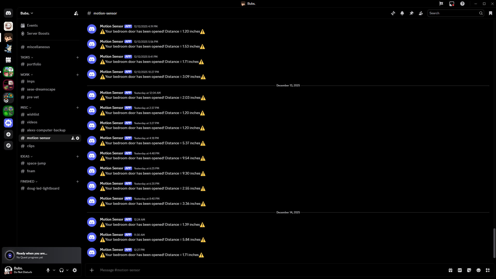
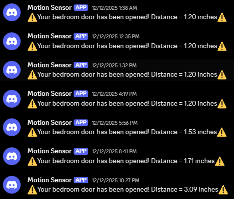

Motion Detector MK2
MK1 was an introduction into some issues relating to how the messages were being sent. When the message was being sent VIA email, it would take a good minute or to for it to show up in my feed and in my notifications on my phone.
This is when my friend made an amazing recommendation to just send the messages through discord and making a discord bot. I thought this was an amazing suggestion and felt compelled to make it come to life.
I then created my own bot using discord bot manager and watched a video made by an 11 year old to figure out how to connect the ESP32 to a discord bot. Turns out it was just a few setting changes and api keys.
The bot works amazingly and I have had no issues with it.


